|
|
| sea anemones text index | photo index |
| Phylum Cnidaria > Class Anthozoa > Subclass Zoantharia/Hexacorallia > Order Actiniaria |
| Tiger
anemone Macrodactyla fautinae updated Jul 2023 Where seen? This large strikingly banded anemone with a red-spotted body is commonly seen on Changi, and sometimes in other Northern shores. In soft silty sand, and sandy areas among seagrasses. This sea anemone was first described from Singapore in 2023 and named in honour of the late Emeritus Professor Daphne Gail Fautin. Throughout her career, she had worked tirelessly to advance the knowledge of sea anemones, and she spent much time in Singapore studying our sea anemones and sharing and training scientists and volunteers here. Features: Diameter with tentacles expanded 6-10cm. One ring of many thick, tapered, smooth tentacles with a banded pattern that resembles tiger stripes. Colours are mostly brown, beige sometimes with a tinge of orange or purple. Near the mouth, there is usually a pair of bright maroon, red or orange spots and sometimes, a ring of several white spots around the mouth. The pale body column has rows of red-tipped bumps. These are perforated, lobe-like verrucae, and water squirts out of the bumps like from a watering can the anemone contracts its body. With its tentacles tucked into its rounded body, the anemone looks like a bizarre strawberry - so it is sometimes also called the Strawberry anemone. What does it eat? There has been several observations of the anemone partially swallowing a large sea pen! The anemone is often seen to protrude a large portion its 'throat' out of its body. Sometimes, so extensively that its tentacles are hidden and it appears to be a blob or jellyfish. Dr Nicholas Yap comments that perhaps it is this behaviour that allows it to capture large prey! |
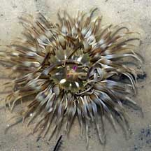 Changi, Jul 04 |
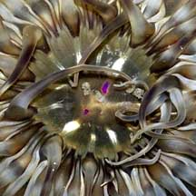 |
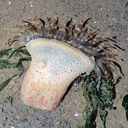 Red bumps on the body column. Changi, Jul 08 |
|
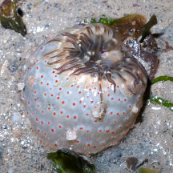 Looks like a bizarre strawberry! Changi, Aug 05 |
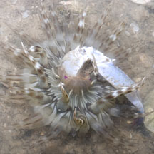 Eating a crab? Changi, Jul 11 |
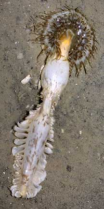 Attempting to swallow a sea pen! Changi, Jul 04 |
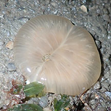 Throat everted into a blob - a trap for large prey? Changi, Jun 19 |
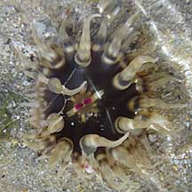 Small one. Cyrene Reef, Mar 11 |
| Tiger anemones on Singapore shores |
On wildsingapore
flickr
|
| Other sightings on Singapore shores |
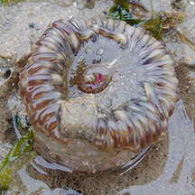 Coney Island, Jun 20 Photo shared by Richard Kuah on facebook. |
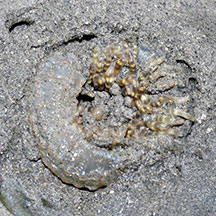 Pulau Ubin, Dec 17 Photo shared by Loh Kok Sheng on facebook. |
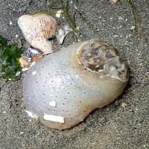 Pulau Ubin, Jul 24 Photo shared by Richard Kuah on facebook. |
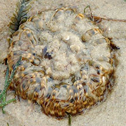 Chek Jawa, Nov 17 Photo shared by Liz Lim on facebook. |
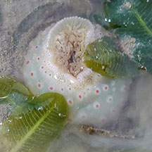 Beting Bronok, Jul 23 Photo shared by Richard Kuah on facebook. |
References
|